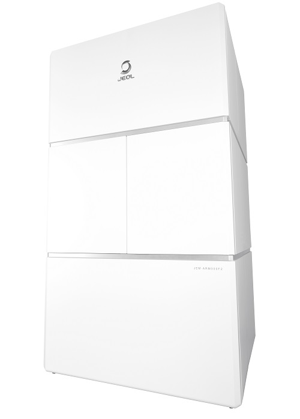
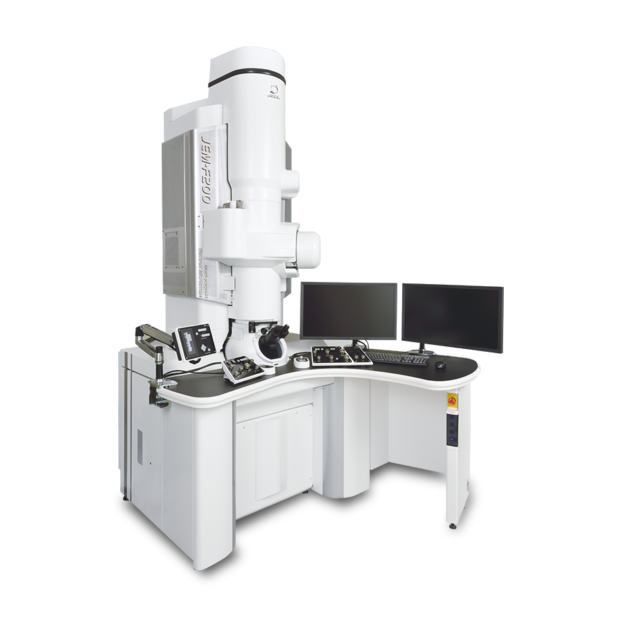
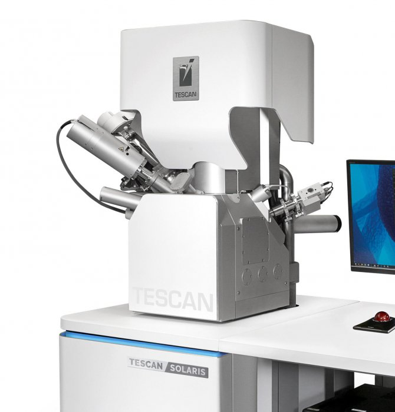
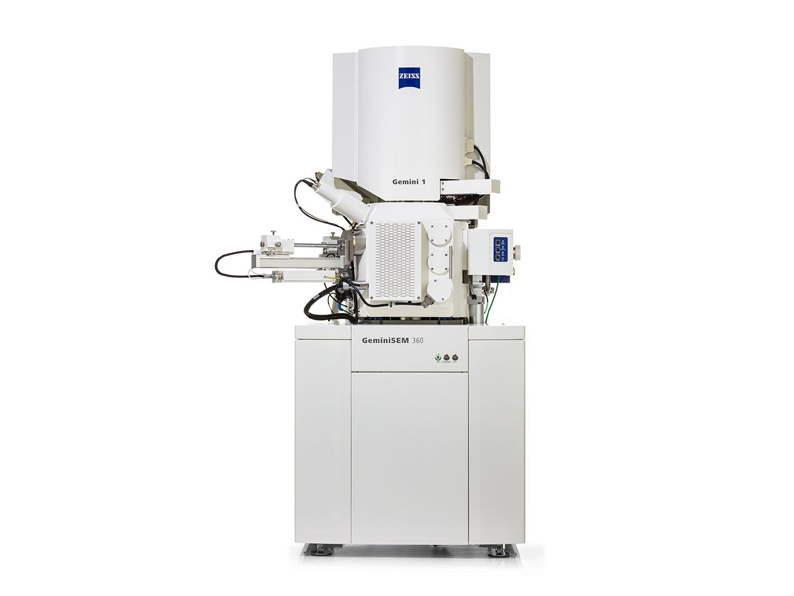

01
Research Theme I
A concise statement of the first scientific problem your group addresses.
Deep-X Lab develops rigorous, collaborative research at the intersection of fundamental questions and transformative technologies.
Use this section to introduce your three to five core research themes. Replace the placeholder descriptions with your laboratory's research questions, methods, and impact.
A concise statement of the first scientific problem your group addresses.
Explain the distinctive methods, platform, or theory that enables the work.
Highlight the long-term vision and the broader impact of this direction.
Introduce the PI, researchers, students, and alumni here. Add a short biography, research interests, and an optional personal profile link for each member.
Deep-X Lab's new website is now online.
Share new papers, awards, talks, and milestones here.
Advertise student, postdoctoral, and collaboration opportunities.
Describe open positions, desirable backgrounds, application materials, and how to contact the PI. Keep the requirements clear and welcoming.
Our platform integrates advanced electron microscopy, focused-ion-beam preparation, and surface characterization.

An atomic-resolution analytical electron microscope for ultrahigh-spatial-resolution imaging and sensitive X-ray analysis over a broad accelerating-voltage range.
Official product information ↗
A multipurpose field-emission transmission electron microscope for high-resolution TEM/STEM imaging and analysis, combining stability, brightness, and energy resolution.
Official product information ↗
A multipurpose TEM with digital control and automated functions, supporting imaging and analysis across materials-science and life-science applications.
Official product information ↗
A dual-beam FIB-SEM platform that combines high-resolution SEM, a Ga ion beam, and nanofabrication capability for precise specimen preparation and microstructural analysis.
Official product information ↗
A field-emission SEM for high-resolution surface imaging and analysis across material, life-science, and industrial samples, with low-voltage imaging and broad sample flexibility.
Official product information ↗